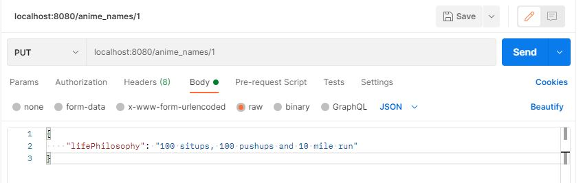

Postman is a tool for developing APIs. It allows you to send costum HTTP requests to your server. Often it's easy to test in your browser if a GET request works because something gets returned to you. However when initially starting out you might not have the funtions ready to test request such as POST, PUT/PATCH or DELETE. Postman allows you to send such requests
Sending a JSON object in the POST body allows you to test if your method actually creates new data in your database
The following image is a PUT request where we update the object anime_names with the ID of 1 to include a lifePhilosophy with the value of "100 situps, 100 pushups and 10 mile run"
Postman is extremely helpful and you can do so many things with it to make sure your application works before you get in too deep!